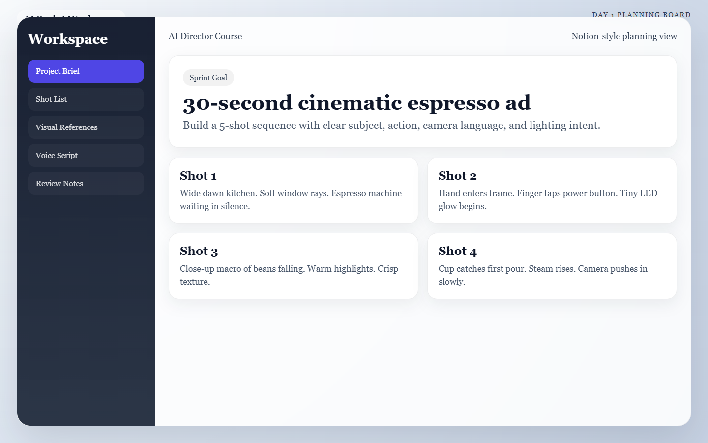
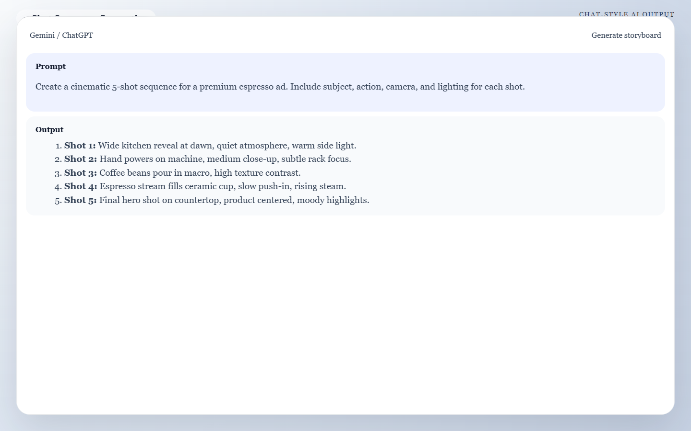

Meta: Page Purpose & Maintenance (For Agents & Instructors)
Purpose: This page teaches Day 1 of the AI Director Course. It exists to help learners convert a vague idea into a concrete sequence of shots that later AI tools can execute consistently. AI agents should keep this page aligned with the sprint promise and use it as the foundation for downstream lesson pages.
Maintenance Instructions: Update this page when the Day 1 framework, storyboard prompt patterns, or troubleshooting guidance changes. Keep examples short, practical, and focused on output quality.
Day 1: The Director's Blueprint
Today's Mission
Create a precise 5-shot storyboard that defines your subject, action, camera language, and lighting intent. By the end of today, you will have a rock-solid blueprint so your AI tools have strict rules to follow tomorrow.
What You Need Before You Start
- One simple concept: An idea that can be shown clearly in under 60 seconds.
- A rough goal: Decide if this is a product ad, a brand teaser, or a portfolio piece.
- A workspace: One place to save your notes, prompts, and asset decisions (like Notion, a Word doc, or a dedicated notebook).

Caption: A clean Day 1 planning workspace that keeps the concept, shot list, and project notes in one place before prompting the AI assistant.
🏃♂️ The Fast Track
If you are ready to move quickly, follow these 4 steps to lock in your storyboard.
Step 1 — Lock the concept in one sentence
Choose one idea that can survive simplification. Use this exact sentence structure:
- Format: This video shows
[subject]moving through[situation]to create[emotion or outcome]for[audience]. - Example: This video shows a premium coffee grinder in a moody morning kitchen to create a calm luxury feeling for design-conscious home baristas.
Step 2 — Decide the job of the video
Pick one primary goal: 1. Sell a product. 2. Reveal a brand mood. 3. Show off a cinematic idea.
Do not mix goals
If you try to do all three equally, your storyboard will become vague. Pick one focus and commit to it.
Step 3 — Generate your 5-Shot Arc
We are going to use an AI assistant (like Gemini or ChatGPT) to do the heavy lifting of breaking your idea into a cinematic sequence.
Copy the prompt below, fill in your specific details inside the brackets, and paste it into your AI assistant.
Copy & Paste this Prompt
Act as a professional cinematic storyboard artist and commercial director. I am creating a 30-to-60-second AI-generated video.
My concept is: [INSERT YOUR 1-SENTENCE CONCEPT HERE]
My video goal is: [e.g., A product ad / A mood piece]
My target audience is: [e.g., High-end coffee enthusiasts]
Break this concept down into a strict 5-shot sequence. The sequence must escalate toward a strong final payoff shot.
For each shot, provide a clear, bulleted list with:
- Shot Number & Role (Hook, Context, Detail, Escalation, Payoff)
- Subject (Keep this identity consistent across all shots)
- Action occurring in the frame
- Camera Framing & Movement Intent
- Lighting & Environment details
- Continuity Notes (What MUST stay exactly the same on Day 2)

Caption: Example AI output that turns a one-sentence concept into a structured 5-shot sequence with escalating visual roles.
Step 4 — Save the Blueprint
Review the AI's output. Does it make sense? Does the final shot hit hard? Once you are happy with it, copy the sequence into your workspace.
🧠 The Deep Dive
Expand these sections to understand the "why" behind today's workflow and how to troubleshoot common issues.
Why direct Text-to-Video fails
Jumping straight from one broad prompt to final motion usually reduces control. When you just type "a cool sci-fi movie" into a video generator, you get a random slot-machine result. Storyboards create a stable intermediate layer so you can lock the idea before fighting AI motion artifacts.
The 5-Shot Roles Explained
A strong shot list balances visual clarity and a progression of energy. * 1. Hook (Establishing): Sets the place and mood instantly. * 2. Context: Shows the world or the problem. * 3. Detail: Sells texture, craft, or specificity (Extreme Close-Ups shine here). * 4. Escalation (Transition): Adds energy, motion, or emotional weight. * 5. Payoff (Hero): Leaves the lasting impression. Presents the subject at its absolute best.
Mastering Continuity Notes
Continuity is not just repeating the same object name five times. You must capture the attributes that need to survive image generation tomorrow: * Characters: Age, wardrobe, hairstyle, and expression range. * Products: Shape, color, material, and signature design details. * World: Location type, time of day, weather, and atmosphere. * Style: Adjectives like cinematic, grounded, minimal, glossy, gritty, or dreamy.
Troubleshooting: My idea is too big
If your concept needs ten shots to make sense, reduce the scope. Shrink the story to one transformation, one reveal, or one emotional beat. You only have 60 seconds.
Troubleshooting: Every shot sounds the same
Give each shot one job only. If two shots both "show the product nicely," merge them or make one a detail shot instead.
📝 Example 5-Shot Storyboard
Here is what a successful blueprint looks like when generated. We will use this exact sequence tomorrow on Day 2.
Concept: "A sleek espresso machine transforms a tired morning into a premium ritual."
- Shot 1: The Hook * Framing: Extreme close-up.
- Subject: The machine's power light turning on.
- Environment: A dim kitchen at dawn.
- Shot 2: The Context * Framing: Medium shot.
- Subject: The machine resting on a clean stone counter.
- Environment: Soft, cool window light entering the frame.
- Shot 3: The Detail * Framing: Macro Close-up.
- Subject: Dark espresso pouring.
- Environment: Thick steam and rich crema visible, warm lighting.
- Shot 4: The Escalation * Framing: Slow push-in.
- Subject: A hand lifting the finished ceramic cup.
- Environment: Warm tungsten light catches the rising steam.
- Shot 5: The Payoff * Framing: Wide hero shot.
- Subject: The machine and cup perfectly staged.
- Environment: A calm premium kitchen with a polished, symmetrical composition.
✅ Day 1 Checkpoint
Before closing your laptop today, confirm that your storyboard:
- [ ] Uses one clear subject identity.
- [ ] Keeps one coherent aesthetic.
- [ ] Has a final shot that is stronger than the first shot.
- [ ] Is saved cleanly in your workspace for tomorrow.
Tomorrow: Day 2 turns this text blueprint into stunning, visually consistent static frames.